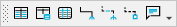

The Toolbox Toolbar
The toolbox contains the tools for commonly used objects in a model, such as table, materialized query table, view, relationships, and annotation. By default, the toolbox is docked below the ribbon.
The tools available in the toolbox depend on the model type, notation, and in some cases, the server that you specify.

- The Materialized Query Table tool () appears in the toolbox in physical models based on Db2. The same icon is used for the Materialized View tool, available for physical models based on Oracle.
- In earlier versions on erwin Data Modeler (DM), the Toolbox toolbar contained a Select tool (). This tool enabled you to select or deselect a toolbox tool. erwin DM 2020R1 onward, to deselect a toolbox tool, press the Esc key.
If you work with multiple models at the same time, you can select a tool in one model then go to another model and select another tool. The last tool that you select for each window remains selected for that window so you can return to a window and resume work with the correct tool selected.
- You can add consecutive multiple objects by pressing the CTRL key before you click the item in the toolbox. When you click again in the diagram window, another object of that type is created.
- You can move the toolbar to a floating or docked position or you can display or hide the toolbar in the workspace.
- To display or hide the toolbar, click Toolbars, Toolbox from the View menu.